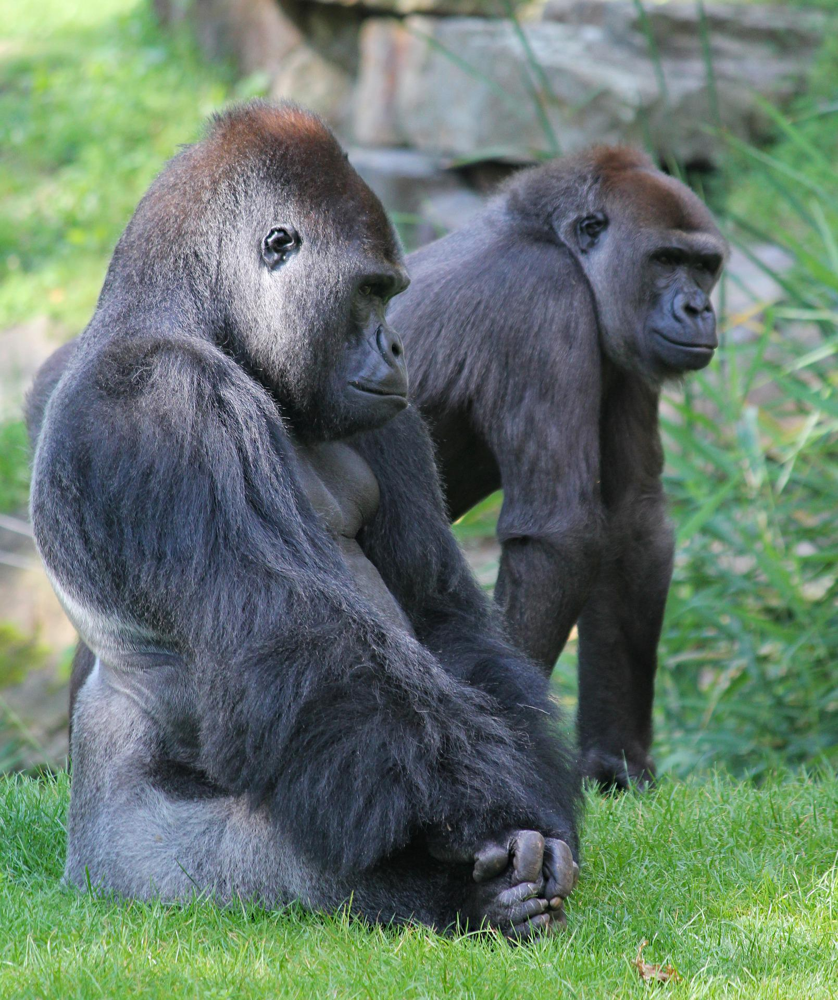
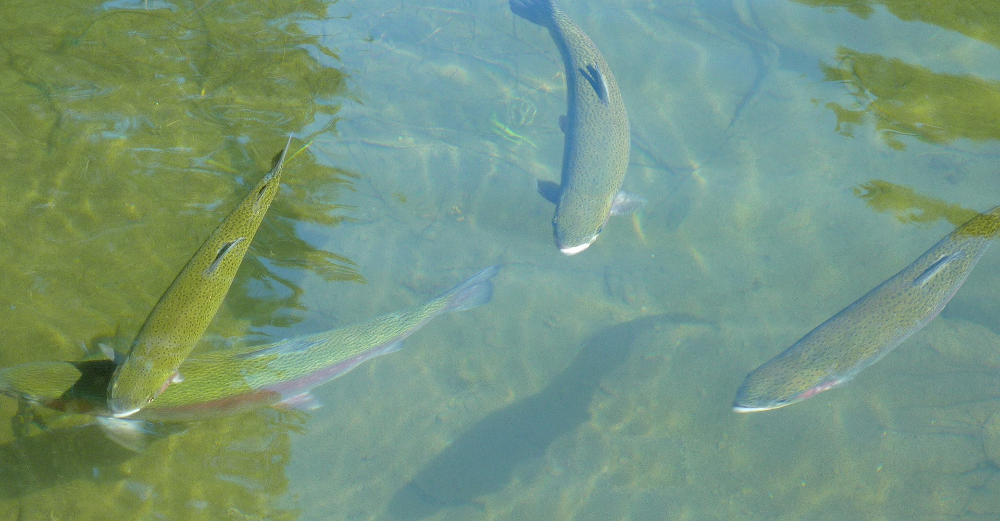
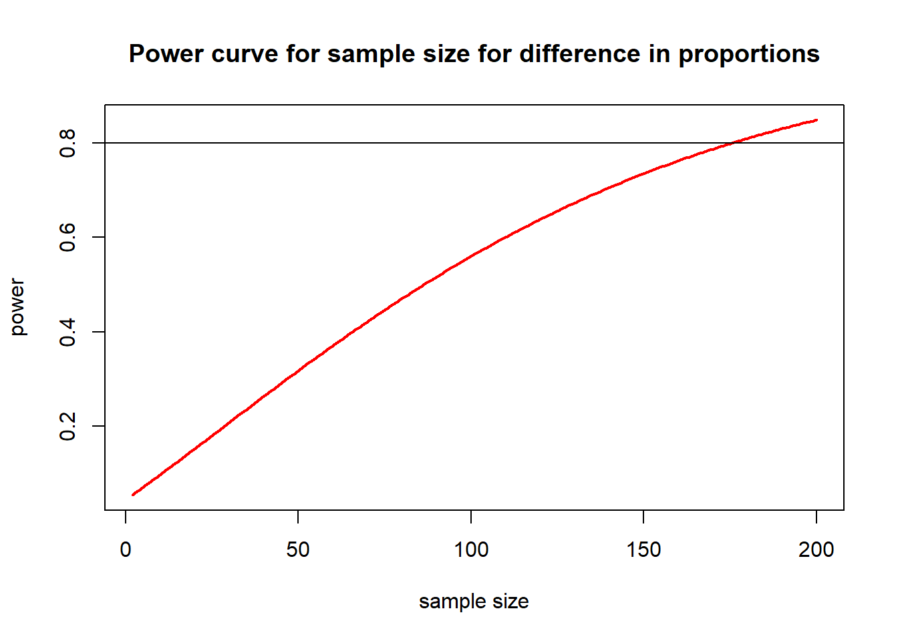

Power Analyses
1 Some Concepts to understand
1.1 Effect Size
Experiment 1 Measures the weights of swans and geese.
Experiment 2 Measures the weights of swans and robins.
What experiment is most likely to find a significant difference in weight between species?
Answer
Experiment 2 because the difference between swan and robin weight is bigger. The effect size is bigger.Effect sizes can be measured. The effect size in a correlation is r. In a t test, it is a number which is given the letter d.
1.2 Sample Size (n)

Experiment 1 - Measures the heights of 10 female and 10 male giraffes.
Experiment 2 - Measures the heights of 100 female and 100 male giraffes.
What experiment is most likely to find a significant difference in height?
Answer
Experiment 2 because more of the population is sampled.
1.3 Significance (alpha) Level
All student projects in group A compare p values to an significance level of 0.05.
All student projects in group B compare p values to an significance level of 0.01.
What group are most likely to find a significant result?
Answer
Group A because the p values do not have to be as small to be below 0.05 and to reject the null hypothesis.
1.4 Type I Errors
![alt.text=Table of error types. If null hypothesis is true and the decision about null hypothesis is don’t reject, then this is the correct inference (true negative) (probability = 1 - alpha). If null hypothesis is true and the decision about the null hypothesis is reject, this is a type 1 error (false positive) (probability = alpha). If null hypothesis is false and the decision about null hypothesis is don’t reject, then this is a type two error (false negative) (probability = beta). If null hypothesis is false and the decision about the null hypothesis is reject, this is the correct inference (true positive) (probability = 1 - beta).](images/error_table.png)
A type one error is when you find a significant result but in reality there is no significant effect or difference.
Example: a student project finds there is a difference in maths performance between girls and boys. But in reality this is unlikely to be the case since other researchers have not found this (Li et al., 2018, Lindberg et al., 2010, Reilly et al., 2019). The student would have made a type 1 error.
All student projects in group A compare p values to an alpha level of 0.05.
All student projects in group B compare p values to an alpha level of 0.01.
Which cohort is most likely to make type 1 errors in their projects?
Answer
Group A because the higher alpha level means they are more likely to reject the null hypothesis. They are therefore more likely to mistakenly reject a null hypothesis that in reality is true.
1.5 Type II Errors
A type two error is when you mistakenly accept the null hypothesis. You conclude there is no difference or effect when there really is.

Example: you measure the weights of male and female gorillas and find no significant difference. In reality males are a lot heavier. You would have made a type two error.
We want to reduce the risk of both type 1 and 2 errors. While it is debatable how to do this, there is a convention established that we use a significance level of 0.05 and 0.8 power.
1.6 Power
Power is the chance that a study will detect an effect if one exists.
A power analysis can tell us how many samples will give us 80% power (80% is 0.8 as a percentage).
In other words, you use an alpha level of 0.05, estimate your effect size, then choose a sample size that gives you 0.8 power.
A power analysis can also be used to determine how high the power of an analysis was that has already been done.
In the future (and already in some disciplines) conventions might change to use, for example, a significance level of 0.01 and 96% power. If you want to know more search for “the replication crisis” on the internet.
2 Power analyses in R
There are various packages which do power analysis in R. pwr is
for simpler analyses such as t tests and ANOVAs, up to lm
and simR
is for more complex mixed models and glms.
First, download and install the package.
library(pwr)2.1 Power analyses to find out sample size
You want to know how many rats you should weigh, to detect an effect of a drug compared to a placebo where the effect size is 0.5, using a significance level of 0.05 and 0.8 power.
To do power calculations in pwr, you leave out sample
size (n) but enter effect size (d), significance level and power:
pwr.t.test(n = NULL, d = 0.5, sig.level = 0.05, power = 0.8)
Two-sample t test power calculation
n = 63.76561
d = 0.5
sig.level = 0.05
power = 0.8
alternative = two.sided
NOTE: n is number in *each* groupWe need 128 rats.
If you have a good reason to expect a difference in a particular direction, which is whether the treatment group is higher or lower than the control, you set alternative = “greater” or alternative = “less” - it doesn’t matter which you choose for this pwr.t.test command. If you cannot be sure if the treatment will be higher or lower weight, you set alternative = “two.sided”.
2.2 Other Statistical Tests
The pwr package has a bunch of functions, but they all pretty much work the same way.
| Function | Description |
|---|---|
pwr.2p.test |
two proportions (equal n) |
pwr.2p2n.test |
two proportions (unequal n) |
pwr.anova.test |
balanced one way ANOVA |
pwr.chisq.test |
chi-square test |
pwr.f2.test |
general linear model |
pwr.p.test |
proportion (one sample) |
pwr.r.test |
correlation |
pwr.t.test |
t-tests (one sample, 2 sample, paired) |
pwr.t2n.test |
t-test (two samples with unequal n) |
Challenge
The function pwr.anova.test() performs a power analysis
for a balanced anova (balanced is when all the groups have the same
sample size). k is the number of groups to be compared and f is the
effect size.
You are planning a project to measure the pollution concentration in fish from three lakes (three groups). Use an effect size of 0.2, significance level of 0.05 and power of 0.8. How many fish do you need to catch from each lake?

Answer
pwr.anova.test(f=0.2,k=3,power=0.80,sig.level=0.05)
Balanced one-way analysis of variance power calculation
k = 3
n = 81.29603
f = 0.2
sig.level = 0.05
power = 0.8
NOTE: n is number in each groupYou need to catch 81 fish from each lake, 243 in total.
2.3 Choosing an Effect Size Before the Experiment
If you really have nothing else to go on, assume an effect size of 0.5. However, you can normally do better than that, by looking at previous experiments you, or other people, have run.
Keep in mind that specifying effect size is not a statistical question, it’s an ecological question of what effect size is meaningful for your particular study? For example, do you want to be able to detect a 25% decline in the abundance of a rare animal or would you be happy detecting a 1% decline? For more explanation read the blog post The Effect Size: The Most difficult Step in Calculating Sample Size Estimates.
2.4 Power Analysis for Estimating Power
Imagine this experiment has already taken place. A new treatment was tested on 40 mice (20 in the control group and 20 in the treatment group) and measurements of success taken. The effect size was found to be 0.3.
Challenge
Use the function pwr.t.test and calculate what power the
t test had. Use a significance level of 0.05.
Answer
pwr.t.test(n = 20, d = 0.3, sig.level = 0.05, power = NULL)
Two-sample t test power calculation
n = 20
d = 0.3
sig.level = 0.05
power = 0.1522683
alternative = two.sided
NOTE: n is number in *each* groupPower was only about 15%. This means that given the effect size, and sample size, we only detected that effect 15% of the time. So, it probably was not worth doing this experiment!
How big would the sample sizes in the experiment above have had to be to achieve 80% power? We can try n = 30:
pwr.t.test(n = 30, d = 0.3, sig.level = 0.05, power = NULL)
Two-sample t test power calculation
n = 30
d = 0.3
sig.level = 0.05
power = 0.2078518
alternative = two.sided
NOTE: n is number in *each* groupPower improves to around 20%. We need to try higher sample sizes. Instead of manually plugging in different values for n, we could make R run the power analysis for many different sample sizes. This code calculates and plots power for samples sizes from 2 to 200.
nvals <- seq(2, 200, length.out = 200)
powvals <- sapply(nvals, function(x) pwr.t.test(d = 0.3, n = x, sig.level = 0.05)$power)
plot(nvals, powvals,
xlab = "sample size", ylab = "power",
main = "Power curve for sample size for difference in proportions",
lwd = 2, col = "red", type = "l"
)
abline(h = 0.8)
Explanation of code
nvals is an object made to store a sequence
seq() of numbers from 2 to 200powvals is an object that will store the calculated powers
retrieved using $powersapply() takes each number x in nvals and uses
it in the function pwr.t.test()plot() graphs the numbers stored in nvals and
powvals against each otherxlab, ylab and main are the x and
y axes labels and main plot titlelwd is line width, col is line colour and
type =1 is a solid lineabline() draws horizontal (h) line at 0.8
Now we can see that a sample size of around 175 for each group would have given enough power.
Effect sizes should be reported in results. If a effect size is not given, it can sometimes be calculated. For example, d can be calculated if the means and standard deviations are given.
3 Run a power analysis
Challenge
Calculate the power for the t test in one of these studies.
Study 1 If you remember doing a t test for a project you did in the past and you have the results or data saved, calculate power for that study
Study 2 Imagine you are planning to measure inhibitory control of zebra finches while in either a quiet environment or exposed to traffic noise. Decide how many birds you might have the resources to test and use that as n. Use a significance level of 0.05. Then estimate an effect size from the first paragraph of the Results section of Osbrink et al, 2021. Use these numbers to calculate what the power would be for a t test.
Would you change the number of birds that you initially thought you would test after doing a power analysis?
Possible Answer to Study 2
Suppose you planned to test 50 birds (n = 25 per group). And used the effect size d = 0.29 as reported in Osbrink et al, 2021.
pwr.t.test(n = 25, d = 0.29, sig.level = 0.05, power = NULL)
Two-sample t test power calculation
n = 25
d = 0.29
sig.level = 0.05
power = 0.1712827
alternative = two.sided
NOTE: n is number in *each* groupPower would be 0.17 so it would only be worthwhile doing the study if it was feasible to increase the number of birds.
Adapted from Statistical Power by Andy Wills, Clare Walsh and Chris Longmore and EnvironmentalComputing.